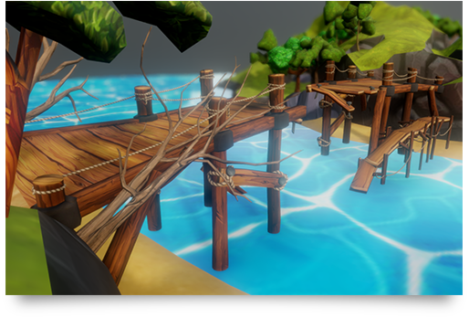

Recent Projects

River Band and Bridge - in Rayha's Poem
3D Game Art Assets
Role: 3D Modeler, Texture Designer
Year: 2018
Sailboat and Island
3D Modeling
Role: 3D Artist
Year: 2018
T-Rex
3D Modeling
Role: 3D Artist
Year: 2017